Vanderbilt · Learning Series · ATD facilitator guide · print edition
Hiring, Human, the facilitator guide

Run of show
| Screen | Full (min) | Core (min) |
|---|---|---|
| Welcome / QR | 3 | 2 |
| Objectives | 2 | 1 |
| The Chancellor's charge | 3 | <1 |
| Agenda | 1 | skip |
| 01 · The temptation and the line | 9 | 6 |
| Manifesto | 1 | skip |
| 02 · The red side, exactly | 12 | 8 |
| 03 · The wide funnel | 12 | 9 |
| 04 · Structure before candidates | 11 | 7 |
| 05 · The Hiring Lab | 14 | 10 |
| 06 · Bias, watched | 10 | 6 |
| Recap quiz | 4 | 4 |
| Capstone · My structure card | 6 | 6 |
| Glossary | 1 | skip |
| Closing · commitment | 4 | 1 |
| Total | 93 | 60 |
Audience
Managers and team leads who hire or make talent decisions: opening requisitions, screening, interviewing, promoting, or mapping team skills. Part of the Manager Voyage program. 8 to 24 works best (the audit and anchor drills run in pairs); scales larger with room votes. Assumes Start Smarter: learners can say 'prompt' and 'model,' and the traffic light is restated rather than taught from zero.
Room setup
Projector plus presenter device; learners on their own devices via the Welcome-slide QR; movable seating for pairs. A whiteboard helps for the never-list and the anchor rewrites. Virtual: breakouts of 2 for the audit and anchor swaps. Set the norm in the first minute: roles and processes, never a candidate's or colleague's name, and nothing typed is saved or sent. Expect at least one person in the room to have already pasted a resume into a chatbot; plan warmth, not blame.
Materials
- Projector or large display and the facilitator link open (this edition)
- Facilitator laptop with arrow keys or clicker; all notifications off
- Learner devices (BYOD) joining via the welcome-slide QR
- A few printed cheat sheets (cheatsheet.html) for anyone without a device
- Printed hiring structure cards (worksheet.html) as the no-device and projector-failure fallback
- Whiteboard or flip chart with markers for the never list and the anchor rewrites
- Your unit's current AI tool guidance, or the VU approved-tools list, in case a policy question needs the exact source
A week before
- Read this guide end to end, then run BOTH editions start to finish, doing every exercise, including building a structure plan for a role you might genuinely hire. You will be asked what your own next posting needs; a real answer plays far better than a hypothetical.
- Build your own capstone card for a real talent decision. You'll show the structure, never the contents.
- Send the pre-work invite (template on this page) with the calendar invite: bring one hiring or talent decision that is live or coming, held privately.
- Decide your path now: Full (90-minute slot) or Core (60). Mark which pair drills you keep versus run solo.
- Skim SHRM's current AI-and-employment page and the Stanford AI Index responsible AI chapter so the Guess the Number reveals feel fresh in your mouth; the game carries the citations, but you should be able to say 'the research' with a straight face.
- Check with HR whether any AI screening tool is under evaluation at the University right now; if one is, know its status before someone asks.
The day before
- Test the projector with the facilitator link; confirm the notes rail is readable from where you'll stand.
- Scan the welcome QR from the back of the room with your own phone; it must land on the learner edition.
- Run one full round of the Hiring Lab, including the chatbot-screen option once, so you can speak to the violation outcome from experience.
- Print 5 to 10 cheat sheets and structure cards.
- Re-read the tough-questions bank; say the 'I already pasted a resume' response out loud once. That confession is coming.
30 minutes before
- Welcome slide up as people arrive; it does the enrolling for you.
- Close every other tab and app; silence the machine.
- Test arrow-key navigation and one interaction (run a Guess the Number round, open the lab).
- Write 'ROLES AND PROCESSES, NEVER NAMES' where the room can see it all session.
- Draw the two-sides line on the whiteboard: RED SIDE / GREEN SIDE with two empty columns; you'll fill them live in sections 01 and 02.
When things go sideways
If Projector or the site fails mid-session: Teach from the whiteboard: the two sides of the line, the traffic light, and the rubric skeleton all draw in seconds. The audit and anchor drills never needed a screen; the capstone moves to the printed card. The lab becomes a group walk-through: read each moment's three options aloud and have the room vote.
If Learner devices can't join (wifi or filters): Run facilitator-only: the trainers play well on the projector with the room voting A/B/C by hands; the private structure builder and capstone move to paper. You lose typing, not learning.
If You're 10+ minutes behind by the Hiring Lab (05): Declare the Core path silently: pair drills become solo passes, debriefs shrink to one voice, and the closing tightens to the fist-to-five plus commitment round. Never cut the lab, the structure builder, or the capstone; they carry the session's practice objectives.
If Someone names a real candidate or starts describing an identifiable person: Protect the norm warmly: 'Hold that. Roles and processes, never names; this session practices the exact discipline it teaches.' If it keeps happening, it usually means a live, painful search is in the room; offer a private follow-up and steer the room back to structures.
If Someone admits, publicly, that they have already pasted candidate materials into a chatbot: Thank them, genuinely; that honesty is the most useful moment the session can produce. No blame, one clean path: delete the conversations, don't repeat it, and know the escalation point if the material was sensitive. Then aim the room at the swap: every red-side urge has a green-side twin, and their case becomes the worked example.
If The room pushes back: 'AI screening is obviously coming; this line is temporary': Don't argue futures; argue jurisdiction. Vendor tools with audits and HR governance may well come, and that decision belongs to HR and University policy, never to an individual manager with a chatbot. The line in this course is about what managers do with general-purpose tools today, and that line is stable however the vendor market moves.
If The room is the opposite: so worried about AI they won't touch the green side either: Anchor on the structure dividend: rubrics and structured interviews were best practice before AI existed; AI just makes building them cheap. Run the Fix the Posting trainer next; watching proxies fall out of a posting usually converts the cautious, because the fairness gain is visible and no person was ever near the tool.
If A real, specific data-privacy incident surfaces mid-flight: Stop and honor it; this outranks the agenda. Restate the traffic light, confirm the case against it, and route it: their HR contact and VU policy own incidents, and you don't improvise remediation from the front of the room. Park it with a named follow-up and move on.
Tough questions, ready answers
Q: I already pasted resumes into a chatbot last month. How bad is this, and what do I do?
Thank you for saying it, and you are not alone; the tools arrived faster than the guidance did. Three moves: stop, so it doesn't become a habit; delete the conversations in the tool's history; and if the materials were sensitive or the paste shaped a real decision, tell your HR contact so the University hears it from you rather than from a complaint. Then take the energy that made the shortcut tempting and spend it on the green side: the rubric and the audit solve the same time problem without touching a person.
Q: HR uses screening software already. Why is my chatbot different?
Governance is the difference. An enterprise applicant system runs under contracts, data protections, audits, and HR accountability, and even those tools are facing new bias-audit laws. A manager pasting resumes into a general-purpose chatbot has none of that: no data agreement covering candidate materials, no audit trail, no accountable owner, and a model that was never validated for employment decisions. Same-looking act, entirely different legal and ethical footing. When a vendor tool tempts you, the move is to route it to HR, which is exactly what this course asks.
Q: If AI is biased, aren't humans more biased? At least the machine is consistent.
Consistency is the problem, not the defense. A biased human interviewer harms the candidates they touch, can be noticed, coached, and outvoted by a panel; a biased model applies the same skew to every candidate in the pile, silently, at scale, with no one watching a specific decision. Amazon's screener is the clean example: the bias came FROM the human hiring history it learned on, and automation made it systematic. The honest answer to human bias is the structure this course teaches, which is auditable at every step; automation of the verdict is bias with the lights off.
Q: The rubric and structured interviews sound slow. My searches are already too long.
The structure is front-loaded, and that's the trick: thirty minutes before the posting opens, when nothing is urgent yet. It pays itself back inside the same search: screens go faster because the must-haves are written down, interviews stop meandering because the questions exist, and the debrief shortens because you're comparing evidence instead of relitigating impressions. What actually makes searches long is the second round you run because the first one produced a shortlist nobody could defend. And AI collapses the build cost: the drafting that used to take an afternoon now takes minutes, with your judgment on top.
Q: Can I use AI on interview notes if I remove the names first?
Removing the name usually isn't removing the person. Notes carry employer, dates, projects, and specifics that identify someone in a small pool almost immediately, and a hiring pool is always small. The honest test: could anyone identify the person from this text plus context? For interview notes the answer is nearly always yes, so treat them as red. The legitimate version of the urge is upstream: use AI to build a better note-taking template before interview day, when nobody exists in it.
Q: What about using AI to write the rejection and offer emails? That's about a person too.
The template is process; the person is red. Draft the generic rejection or offer template in an approved tool, with brackets where the specifics go, and make it as warm and clear as you like; that's legitimate yellow work. Then add the person's name and details yourself, outside the tool. The test from section 02 runs here unchanged: the moment a specific candidate is identifiable in the text, the paste is over the line, even for a kind purpose like softening a no.
Q: Does the skills map risk labeling my current team? That's people data too.
Run it at the role level and it stays clean: what capabilities does the TEAM have, what does the work ahead need, where are the gaps. That's yellow, in approved tools. What you don't do is feed in performance reviews or assessments of named individuals; that crosses into red exactly like candidate materials do. If the map makes you want to develop a specific person toward a gap, wonderful, and that conversation happens with the person, not with the tool.
Copy-paste templates
Pre-work invite (paste into the calendar invite)
Subject: Before our Hiring, Human session. One thing to bring: one hiring or talent decision that is live or coming for your team, a backfill, a new role, a promotion, a skills gap, held privately. You will never be asked to name a candidate or colleague; every exercise runs on roles and processes, and everything you type stays on your screen. If you have ever been tempted to run applications through an AI tool, come especially; the session is built for exactly that moment. No reading, no tools to install.
7-day pulse (send one week after)
Subject: One week later, did the first move happen? Three quick lines, reply whenever: 1) Did you make the first move from your structure card (the audit, the rubric, the skills map, or pulling the pile out of AI)? 2) What did it change or surface? 3) Is the red line holding on your team, and did anything test it? Replies come to me only. Not yet? The card still works; this note is your nudge.
30-day re-poll (send a month after)
Subject: Thirty days of hiring with the line. Two questions, same scale as the room: 1) Fist to five, how confident are you now drawing the line and building the structure for a real search? 2) What does your next search have that your last one lacked? Reply with a number and a line. The before-and-after pair is how we know this session did more than feel good.
After the session
Seven days out, send the pulse: 'Did the first move from your card happen? What did the requirement audit or rubric session change? Is the red line holding on your team?' At 30 days, send the re-poll: the same fist-to-five confidence question from the close, plus 'what does your next search have that the last one lacked?' The count of first moves actually made (audits run, rubrics built, skills maps done, piles pulled out of AI) is the program's headline Level 3 metric.
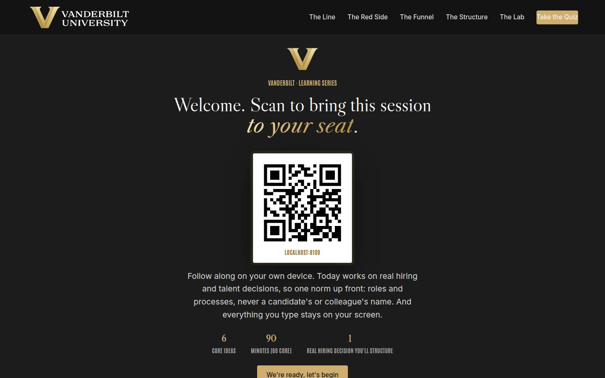
Welcome / QR Full 3 min · Core 2
Get every learner into the experience on their own device and set the norm that makes hiring material safe to work with: roles and processes, never names, and nothing typed leaves the screen.
Say
“Welcome. Point your camera at that code before we start. Today is about AI and the decisions you make about people: hiring, screening, interviewing, growing your team. We'll draw one line very hard, and then spend most of the session on the side of the line where AI genuinely helps. We'll work close to real hiring decisions, so one ground rule for the next ninety minutes: roles and processes, never a candidate's or a colleague's name. And everything you type today stays on your screen; nothing is saved or sent anywhere.”
Do
- Have this slide projected as people arrive.
- Point at the QR and get phones up before you say anything else.
- Set the norm explicitly and early: roles and processes, never a candidate's or colleague's name; typed exercises stay on their screens.
- Confirm by show of hands that most of the room has the site open before advancing.
Ask
“Quick calibration, shout it out: how many of you have a hiring or talent decision live or coming this quarter? And how many have ever been tempted to run some part of it through an AI tool?”
Expect:
- Most hands up on the first question
- Slower, sheepish hands on the second, with some laughter
- At least one person whose hands stay firmly down on both
Respond: Name it warmly: 'Those second hands are why this course exists. The temptation is rational, the answer is a hard no, and the good news is that the valuable uses were never the tempting ones anyway.'
Validate: 80%+ of the room has the deck open on a device; the room can repeat the 'roles and processes, never names' norm back to you.
Watch for: Defensiveness arriving with the coats: some managers expect to be scolded for AI use, others expect an AI sales pitch. The frame that relaxes both: today draws one hard line and then hands you a set of genuinely useful tools on the right side of it.
Transition: “Here's exactly what you'll walk out able to do.”
Core path: Core: one scan prompt, the norm stated once, move on.
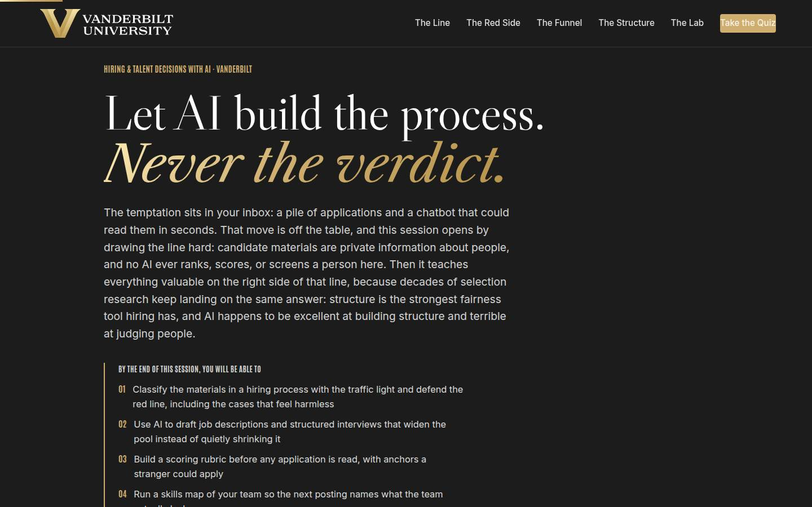
Objectives Full 2 min · Core 1
Set the contract: five capabilities, ending in one real talent decision carded with a first structural move and a date.
Say
“Five things by the end. You'll be able to classify anything in a hiring process with the traffic light and defend the red line, including the cases that feel harmless. You'll use AI to draft postings and interviews that widen your pool. You'll build a scoring rubric before you read a single application, with anchors a stranger could apply. You'll map your team's skills so the next posting names the real gap. And you'll know where bias sneaks into even the legitimate uses, and the guardrails that catch it. It all lands in one artifact: a structure card for a talent decision you actually own, with a date on it.”
Do
- Read the headline out loud; it is the whole course in nine words: AI builds the process, never the verdict.
- Read the five objectives briskly, in plain language.
- Land on the last one: this session ends with a REAL card, one role, one first move, one date.
- Name the sources once for credibility: SHRM's AI research and the Stanford AI Index for the landscape, decades of selection research for the structure.
Validate: Learners can say what the capstone will be (one talent decision, one structural first move, one date).
Watch for: Tool-shopping questions arriving early ('which AI screens resumes best?'). Don't dodge; preview the answer: none, ever, and section 01 shows why that's the wrong prize anyway.
Transition: “Before the plan, one minute on why the university wants exactly this from you.”
Core path: Core: objectives 1 and 3 out loud; the rest on screen.
The Chancellor's charge Full 3 min · Core <1
Anchor the session in the institution's own plan: the one-sentence vision, the three focus areas in hiring terms, and where a well-run search feeds the reputation flywheel.
Say
“Chancellor Diermeier's vision for this university is one sentence with no hedge in it: Vanderbilt will define the great university of the 21st Century and be it. The motto has always been the dare, Crescere aude, dare to grow, and growing means hiring; every focus area on this page runs on talent, and talent arrives through searches like the one you brought into this room. Three focuses: exceptional core operations, bold strategic initiatives, values leadership, and each card says what it means from the hiring manager's chair. The bottom card is the reputation flywheel: reputation attracts talent, funding, partnerships, and access, which build the reputation. Your next search sits at the front of that loop, which is why the university cares how you run it.”
Do
- Read the vision sentence exactly as written, then pause; it lands better without commentary.
- Walk the three focus cards in one breath each, landing each team translation line.
- Close on the flywheel card: reputation attracts talent, and hiring is where talent enters. Point forward: the line and the structure built today are how a search feeds the loop.
Validate: Learners can connect one focus area to the hiring decision they brought, in one sentence.
Watch for: Strategy fatigue: part of the room has heard the vision language elsewhere. Keep it in hiring terms; the translation lines exist so nobody has to squint to find themselves in it.
Transition: “Six moves, in a deliberate order.”
Core path: Core: under a minute: read the vision sentence, gesture at the three focuses, move on.
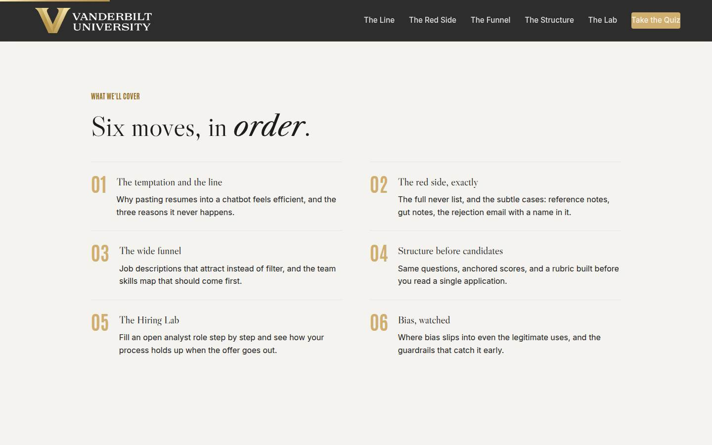
Agenda Full 1 min · Core skip
Show the arc once so learners can place each tool as it arrives: the line, the never list, then the four green-side tools.
Say
“The arc is simple: first the temptation and why it's a hard no. Then the red side in full detail, including the sneaky cases. Then the good stuff: postings that widen your pool, structure built before candidates, a full practice hire in the lab, and finally bias, because even the legitimate uses have doors bias walks through.”
Do
- Walk the six items in one breath each.
- Point out the shape: the line first (01 and 02), because nothing else is safe until it's drawn; then the build (03 and 04), the practice (05), and the watchdog (06).
Validate: None needed; this is orientation.
Watch for: Don't teach here; every concept has its own slide.
Transition: “Start with the temptation, because every one of us has felt it.”
Core path: Core: skip entirely; the deck's structure carries it.
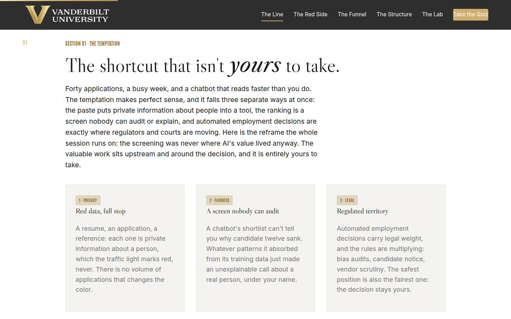
01 · The temptation and the line Full 9 min · Core 6
Establish that pasting candidate materials into AI fails on privacy, fairness, and legal grounds at once, and reframe: the high-value uses of AI in hiring were never the screening.
Say
“Forty applications, a busy week, and a chatbot that reads faster than you do. The temptation makes complete sense, and it fails three ways at once. Privacy: a resume is private information about a person, which our traffic light marks red, never, and no pile is big enough to change the color. Fairness: a chatbot's shortlist can't tell you why candidate twelve sank; an unexplainable decision just got made about a real person, under your name. Legal: automated employment decisions are regulated territory, and the rules are multiplying. Now the reframe that carries the rest of today: the screening was never where AI's value lived. The valuable work is upstream and around the decision, and it's entirely yours to take. Let's calibrate against the real landscape; I want you to guess.”
Do
- Open with the temptation stated sympathetically: forty applications, a busy week. Never mock it; half the room has felt it.
- Walk the three cards: privacy (red data), fairness (unauditable screen), legal (regulated territory). Fill the RED SIDE column on the whiteboard as you go.
- Frame the game: four findings from the AI-and-hiring landscape, guess each before the reveal. Missed guesses are the point; they stick.
- Run Guess the Number on devices, or as a room vote on the projector; the Amazon item deserves ten extra seconds of silence after its reveal.
- Run the quick check (the fit-score add-on), then the pair activity: name a temptation, sort it person-side or process-side.
- Count the person-side hands out loud and land the reframe: the valuable uses live on the process side, and the rest of today is those.
Ask
“From your pair sort: what was the temptation, and which side did it land on, person or process?”
Expect:
- Person side dominates: summarize the resumes, compare candidates, screen the pile
- A few process-side answers: draft the posting, write interview questions
- Someone asks whether their case is really over the line, usually the notes or reference variety
Respond: For the ambiguous case, defer precisely: 'Hold that one; the next section is a field guide to exactly those. If it touches a person, you'll be able to call it in about six minutes.' For the process-side answers: 'You've found the whole second half of this course.'
Debrief: The temptation is rational and the answer is still no, three ways: red data, unauditable fairness, regulated territory. And the prize was never there anyway; it's upstream, where we're headed.
Validate: Quick check correct across the room; the pair sort lands with most temptations called person-side; nobody is still defending 'first pass only' screening.
Watch for: The efficiency argument surfacing as pushback: 'so we just eat the forty applications?' Don't fight it here; promise it: sections 03 and 04 cut the real hours, legitimately. Also watch for the Amazon story being dismissed as old news; the point isn't the year, it's that unlimited engineering resources couldn't audit the bias out.
Transition: “One sentence before the field guide, and I want it to hang in the air a moment.”
Core path: Core: cards fast against the whiteboard, Guess the Number as a room vote, quick check stays, the pair sort becomes one show of hands with no discussion.
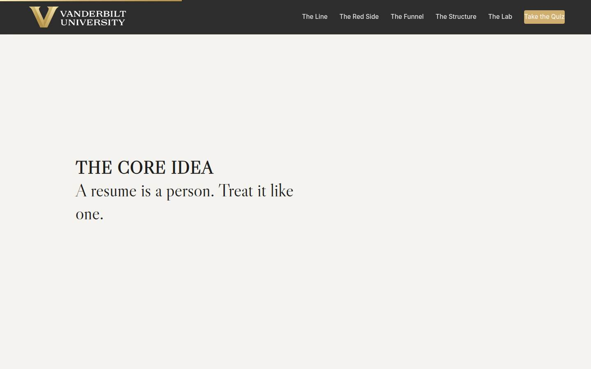
Manifesto Full 1 min · Core skip
One beat of stillness to lock the session's core idea before the never list arrives.
Say
“A resume is a person. Treat it like one.”
Do
- Let the line animate word by word. Say nothing until it finishes.
- Read it once, slowly, then advance.
Validate: None; this is pacing.
Watch for: The urge to talk over it. Don't.
Transition: “So let's get exact about what never goes in, because the subtle cases are where good managers slip.”
Core path: Core: skip; say the line yourself as you pass it.
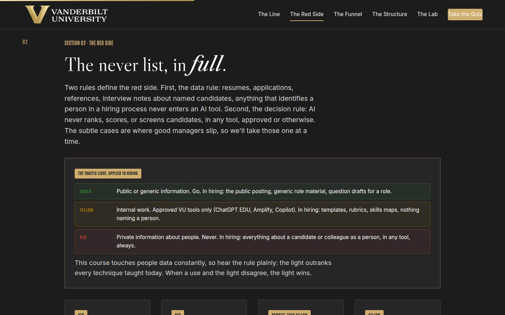
02 · The red side, exactly Full 12 min · Core 8
Install the two red-side rules (no candidate data in any tool; no AI ranking, scoring, or screening anywhere) and calibrate the subtle cases: reference notes, gut notes, the tone check, the nameless template.
Say
“Two rules define the red side. The data rule: resumes, applications, references, interview notes about named candidates, anything that identifies a person in a hiring process, never enters an AI tool. Any tool, including the approved ones, because the color belongs to the data, not the tool. The decision rule: AI never ranks, scores, or screens candidates, period. Now the subtle cases, because nobody in this room was going to paste a resume labeled 'resume.' The reference call summary: that's a person talking about a person, red. Your messy gut notes on a candidate: still a person, red. The rejection email tone check: as written, with the name and the interview details, red; rewrite it around the name first and the generic draft is yellow work. The offer letter template with nobody in it: yellow, approved tools. The test that sorts all of them in one breath: could a specific person be identified from what you're about to paste? If yes, it never goes in.”
Do
- State the two rules crisply: the data rule and the decision rule. Write both atop the RED SIDE column.
- Walk the traffic light card verbatim; the room should be able to finish the rows with you. Stress the outranking line: the light beats every technique taught today.
- Walk the four subtle-case cards, slowest on the rejection-email card: the rewrite-around-the-name move is the most transferable trick on the slide.
- Send them to Over the Line: five cases, classify each. On devices, or by hands on the projector.
- Teach the one-breath test explicitly after the trainer: could a specific person be identified from this paste?
- Run the pair never-list drill from Go deeper; harvest the sharpest additions aloud.
Ask
“Which of the five trainer cases surprised you, and what does that tell you about where your own line was sitting?”
Expect:
- The interview-notes case: 'I didn't think of notes as candidate data'
- The ranking case: surprise that approved tools don't make it okay
- Someone relieved that the behavioral-questions case was green
Respond: For the notes surprise: 'That's the most common line-slip there is, and the fix is upstream: perfect your note template before interview day, when nobody is in it.' For the ranking surprise: 'Right, and hold the two rules separately: the data rule is about what goes in, the decision rule is about what AI does. Ranking breaks the second one even in a governed tool.'
Debrief: Two rules, one test, and four subtle cases you can now call cold. Everything we do from here lives safely on the other side of that line.
Validate: 4+ of 5 on the trainer for most of the room; the room can recite the one-breath test and the two rules unprompted; the pair lists include at least one subtle case.
Watch for: The 'anonymize it' workaround: someone will propose stripping names as the general fix. Take it seriously and close it: hiring pools are small, and employer plus dates plus projects re-identifies almost anyone. Also watch the approved-tools confusion: yellow tools do NOT make red data acceptable; the color belongs to the data, never the tool.
Transition: “And the other side starts with the biggest legitimate win in hiring: the posting.”
Core path: Core: two rules and traffic light at full strength, subtle cases in one pass, trainer on devices; the never-list drill becomes a solo two-minute write.
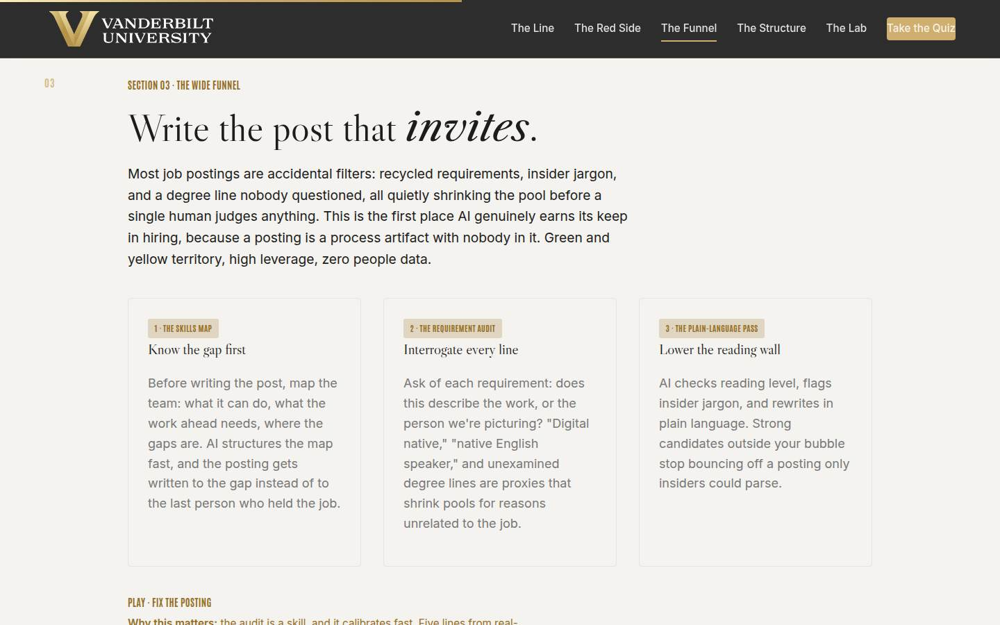
03 · The wide funnel Full 12 min · Core 9
Turn the job posting from an accidental filter into an invitation: skills map first, then the requirement audit (proxies, degree inflation), then the plain-language pass, with AI drafting and the manager judging.
Say
“Most job postings are accidental filters. The requirements got recycled from the last posting, the jargon reads like a membership test, and there's a degree line nobody has questioned in years, all quietly shrinking your pool before a single human judges anything. This is the first place AI genuinely earns its keep in hiring, because a posting is a process artifact with nobody in it. The sequence: first the skills map, what can the team do, what does the work ahead need, where's the gap, so the post is written to the gap instead of to the last person who held the job. Then the requirement audit, with one question for every line: does this describe the work, or the person we're picturing? 'Digital native' is an age proxy. 'Native English speaker' is a national-origin proxy; the real requirement is fluency. And the degree line has to defend itself: if nobody can name the task that needs it, it goes. Then the plain-language pass. AI drafts all three; you judge all three.”
Do
- Open with the reframe: most postings filter by accident, through recycled requirements, jargon, and unexamined degree lines.
- Walk the three cards in sequence: skills map first, requirement audit, plain-language pass. Stress the order; the map comes before the post.
- Teach the audit question and write it on the whiteboard: does this describe the work, or the person we're picturing?
- Send them to Fix the Posting: five lines, diagnose each. The 'genuinely fine' option matters; the audit clears good lines too.
- Connect the skills map to Vanderbilt's talent-mobility work: sometimes the map shows the gap is growable from inside, and the posting becomes a development conversation.
- Run the pair audit drill from Go deeper on requirement lines from their own experience.
Ask
“Think of the last posting your team ran. Which line would have failed the audit, and what was it actually standing in for?”
Expect:
- Years-of-experience lines standing in for a skill nobody defined
- A degree line standing in for 'the last person had one'
- An honest 'I copied the whole thing from the posting before'
Respond: For the copy confession, warmly: 'That's the most common origin story postings have, and it means the filter compounds: every generation inherits the last one's proxies. The audit is how the inheritance stops with you.'
Debrief: Map the gap, audit the lines, lower the reading wall. The pool gets wider for exactly the people the proxies were silently excluding, and no candidate ever went near a tool.
Validate: 4+ of 5 on the trainer; pairs produce at least one real requirement line rewritten as a task; the room can say the audit question unprompted.
Watch for: The defense of degree requirements, which can get heated. Keep it precise: some roles genuinely require credentials (licensure, accreditation), and the audit doesn't remove those; it removes the degree lines nobody can trace to a task. Also watch for someone treating the posting as HR's job; the requirements come from the hiring manager, which is exactly why the audit is theirs.
Transition: “A wider funnel means more candidates to judge fairly, which is why structure comes next, and it comes BEFORE them.”
Core path: Core: cards and audit question at full strength, trainer on devices; the pair audit becomes a solo pass on one remembered requirement line.
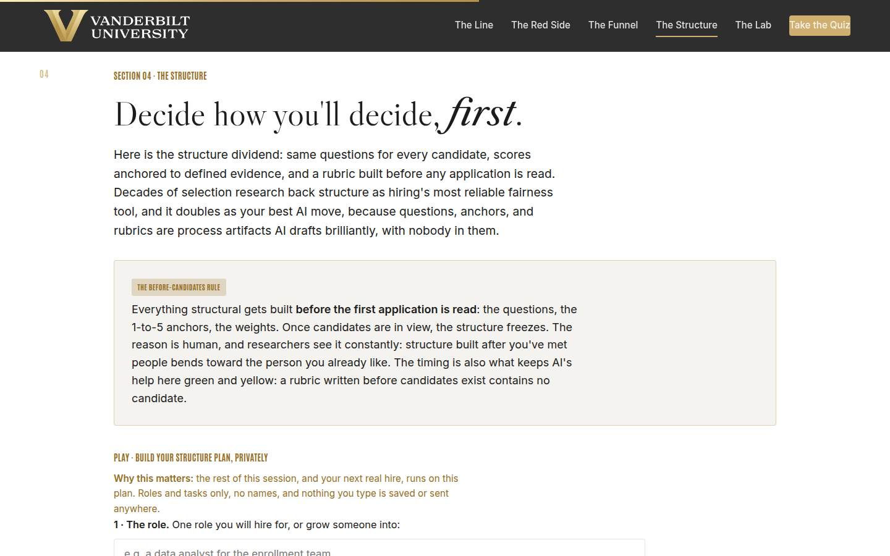
04 · Structure before candidates Full 11 min · Core 7
Install the structure dividend (same questions, anchored scores, pre-built rubric) and the before-candidates rule, then get every learner a real structure plan via the private builder.
Say
“Here's the structure dividend. Same questions for every candidate, in the same order. Scores anchored to defined evidence, and a rubric built before any application is read. Decades of selection research keep finding that structure beats unstructured judgment for both accuracy and fairness, and it happens to be your best AI move, because questions, anchors, and rubrics are process artifacts with nobody in them. One rule makes it work: everything structural is built BEFORE the first application is read, and then it freezes. The reason is human: structure built after you've met candidates bends toward the one you already like, and researchers watch it happen to careful, well-intentioned people. The timing is also what keeps AI's help green: a rubric written before candidates exist contains no candidate. Now build yours: one role, its three real tasks, and the probe, the quality you always wish you'd asked about and never quite did.”
Do
- Land the structure dividend first: structure is the most evidence-backed fairness tool hiring has, and AI is excellent at building structure and terrible at judging people.
- Walk the before-candidates rule on the gold card and repeat its reason: structure built after you've met people bends toward the one you already like.
- Send them to the private builder: role, three real tasks, the probe. Repeat the privacy line before they type.
- Give the builder quiet time; field 3, the probe, deserves a full minute. It's where most learners discover what they've never actually interviewed for.
- Walk what the output means: tasks become questions, the probe gets anchors, the whole thing freezes before the first application.
- Run the quick check, then the pair anchor swap from Go deeper: draft the 2 and the 5 for your partner's probe, and stress-test with the two-raters question.
Ask
“What did you put as your probe, the thing you always wish you'd interviewed for? Shout a few out, no names attached to anything.”
Expect:
- Handling being wrong, taking feedback, admitting mistakes
- Follow-through and self-management when nobody is watching
- How they treat people they don't need anything from
Respond: Point at the pattern: 'Notice nobody said a technical skill. The probes are always character under pressure, which is exactly what unstructured interviews measure worst and anchored questions measure best. Your probe is the strongest argument for the rubric you'll ever have.'
Debrief: A role, three tasks that become questions, a probe that gets anchors, and a rule that freezes it before candidates arrive. That plan is your 30-minute structure session, already half done.
Validate: Every learner has a structure plan with a named role, three tasks, and a probe; quick check lands; pair anchors survive the two-raters test after one rewrite.
Watch for: Anchors written as adjectives ('good communicator, 5; poor communicator, 1'), which recreate the vibe problem inside the rubric. Push to evidence: what would you HEAR in a 5 answer? Also watch the learner whose 'role' is really a promotion decision; the method transfers, and say so: tasks of the next level, evidence anchors, same discipline.
Transition: “Time to run a whole hire with everything so far. The lab is where the method gets felt.”
Core path: Core: dividend and rule in two minutes, builder stays at full length with its quiet minute protected, quick check stays; the anchor swap becomes a solo draft of one anchor pair.
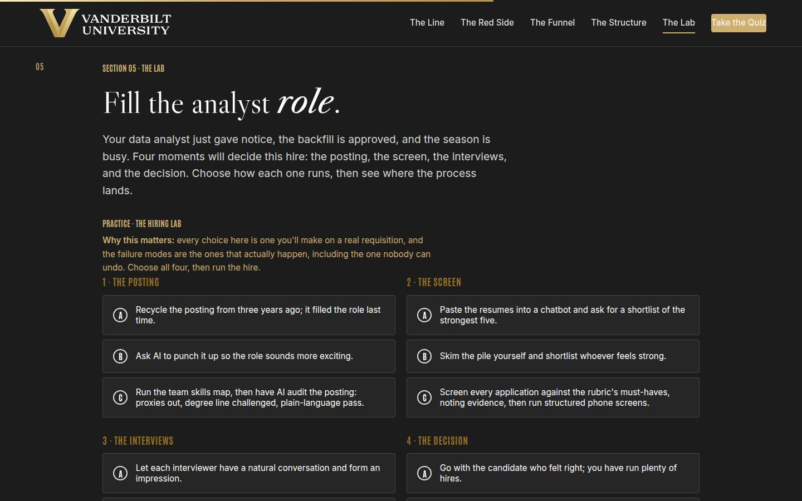
05 · The Hiring Lab Full 14 min · Core 10
Give every learner a full felt rep of the method: four moments of a real hire, chosen and then reviewed, with the chatbot screen wired as an unrecoverable violation. The session's deepest practice block.
Say
“Here's a hire you all recognize: your data analyst gives notice in the busy season, and the backfill is approved. Four moments decide it. The posting: recycle it, punch it up, or audit it properly. The screen: and yes, the chatbot shortlist is one of the options, because it's one of the options in real life. The interviews: vibes, half-structure, or the full anchored set. The decision: gut, arithmetic, or evidence debated with a human making the call. Choose all four, run the hire, and read what comes back. One warning: exactly one choice in this lab cannot be repaired by anything that comes after it. Find out which.”
Do
- Set the scenario in one breath: the analyst gave notice, the backfill is approved, the season is busy. Four moments: posting, screen, interviews, decision.
- Send them into the lab on devices: choose all four, run the hire. Don't coach choices in advance; the weak tiers teach more than the strong one.
- Expect a handful to pick the chatbot screen, some deliberately. Good; the violation outcome is the course's thesis rendered as consequence.
- Ask for a show of hands by outcome: violation, gut hire, half process, defensible hire. Have one violation-tier learner read their outcome aloud; the room goes quiet at 'nothing downstream can repair it.'
- Push the rerun: change your weakest moment and run it again. The delta between runs is the lesson.
- Run the pair drill from Go deeper: find the weakest moment in a real past hire and name the fix.
Ask
“For those who picked the chatbot screen, on purpose or on autopilot: what did the outcome say, and what struck you about it?”
Expect:
- 'Everything after it stopped mattering,' quoted with some surprise
- 'I picked it to see what would happen' from the deliberate testers
- Someone noticing their real process resembles the gut tier more than they'd like
Respond: For the deliberate testers: 'Perfect use of a simulator; you spent the violation where it costs nothing. The real version has no rerun button, which is the entire design of this lab.' For the gut-tier recognition: 'That honesty is the room's win; the fix is one pre-built rubric away, and you built half of it in section 04.'
Debrief: Process quality is a dial: the posting, the interviews, the debrief all improve next search. The red line is a door, and it swings one way. The lab let you learn that for free; the real pile in your inbox will not.
Validate: Every learner completes at least one run; most reach the defensible tier on a rerun; every learner can name their own last hire's weakest moment and the section that fixes it.
Watch for: Learners gaming straight to the maximal options without reading the coaching; re-engage with 'which of these would your real process push back on?' Also protect the dial-versus-door language in the debrief: process quality is a dial, the red line is a door. It's the sentence people quote back at the 30-day poll, so say it clearly.
Transition: “One more section, because even the green side has doors bias walks through.”
Core path: Core: one run instead of run-plus-rerun (rerun only for violation and gut tiers), outcome hands stay, the pair drill becomes a solo weakest-moment hunt. This is the floor; never cut the lab entirely.
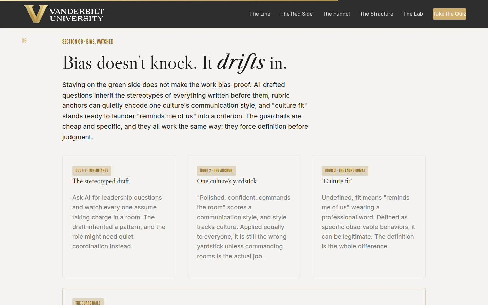
06 · Bias, watched Full 10 min · Core 6
Show where bias enters legitimate AI-assisted hiring (inherited stereotypes, culture-coded anchors, undefined fit) and install the guardrails: diverse review, the same-evidence test, why before rank, and HR for anything automated.
Say
“Last section, and it's the honest one: staying on the green side does not make the work bias-proof. Three doors. First, inheritance: AI drafts are built from everything written before, stereotypes included, so ask for leadership questions and watch every one assume commanding a room. Second, the anchor: 'polished, confident, commands the room' scores a communication style, and style tracks culture; applied equally to everyone, it's still the wrong yardstick unless commanding rooms is the actual job. Third, the laundromat: 'culture fit,' undefined, is 'reminds me of us' wearing a professional word. The guardrails are cheap. Diverse review: a second reader from a different background checks the drafts before use. The same-evidence test: identical facts, identical scrutiny. Why before rank: reasons written down before any ordering, never after. And the hard rule: anything automated that touches candidates goes to HR and VU policy first, always. Notice all four do the same thing: they force definition before judgment.”
Do
- Open with the honest turn: everything since section 02 has been green-side, and green does not mean bias-proof.
- Walk the three doors: the stereotyped draft, one culture's yardstick, the fit laundromat. The anchor example ('polished, confident, commands the room') deserves a beat; half the room has written it.
- Walk the guardrails card and mark the hard rule: anything automated touching candidates goes through HR and VU policy, always.
- Run the quick check on the fit laundromat, then Spot the Bias Door: five setups on devices.
- Run the pair drill from Go deeper: audit the section 04 anchors for style words and rewrite one as observable evidence.
- Harvest one before-and-after rewrite aloud; 'confident' becoming 'answers challenges with data' is the section landing.
Ask
“Where has 'culture fit' shown up in a debrief you've been part of, and was it defined or was it a vibe? No names, no verdicts on colleagues.”
Expect:
- Mostly vibes, admitted with a wince
- One or two teams that define it as concrete behaviors and use it well
- Someone asks how to push back when a senior voice says it
Respond: For the pushback question: 'Ask the defining question instead of arguing: what did we see or hear that shows it? It converts the vibe into evidence or dissolves it, without accusing anyone of anything. That question is the same-evidence test in its politest clothes.'
Debrief: Three doors, four guardrails, one shape: definition before judgment. Run them and the green side stays green all the way through the decision.
Validate: 4+ of 5 on the trainer; pairs produce at least one style-word rewrite; the room can name all four guardrails and states the HR rule without hedging.
Watch for: Bias fatigue: a room that's had many bias trainings may brace for a lecture. Keep it mechanical, not moral: these are quality-control checks on artifacts, cheap and specific, and the trainer's setups are process failures anyone can fix. Also watch someone concluding AI drafts are too risky to use at all; the guardrail exists precisely so the drafts stay usable.
Transition: “That's the full method. Quiz first, then the card that puts a date on it.”
Core path: Core: doors in one pass, guardrails card verbatim, quick check and trainer stay on devices; the anchor audit becomes a solo one-word rewrite.
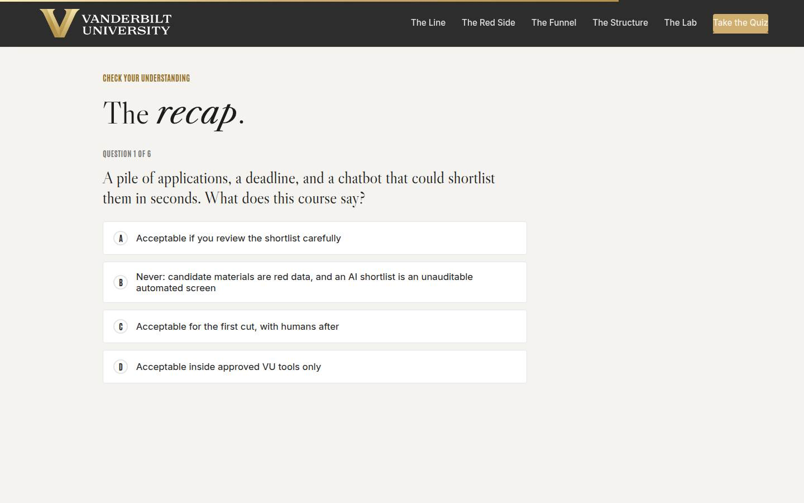
Recap quiz Full 4 min · Core 4
Score the session's knowledge against the five objectives before the capstone applies it (Kirkpatrick Level 2).
Say
“Six questions, one per big idea. This is the systems check before you write the card that leaves the room with you.”
Do
- Everyone takes it on their own device, all six questions.
- Ask for hands on 5-or-better; celebrate briefly.
- For any question the room visibly missed, do a 30-second reteach from the relevant slide, not a lecture.
Validate: Room mode at 5/6 or better. The quiz maps onto the sections, so misses tell you exactly what to reteach; a miss on question 1 or 2 means the line itself needs restating, which outranks everything else.
Watch for: Racing. Frame it as the systems check before the card, not a race.
Transition: “Now the only part of today that changes anything.”
Core path: Core: keep at full length; this is the objectives' evidence.
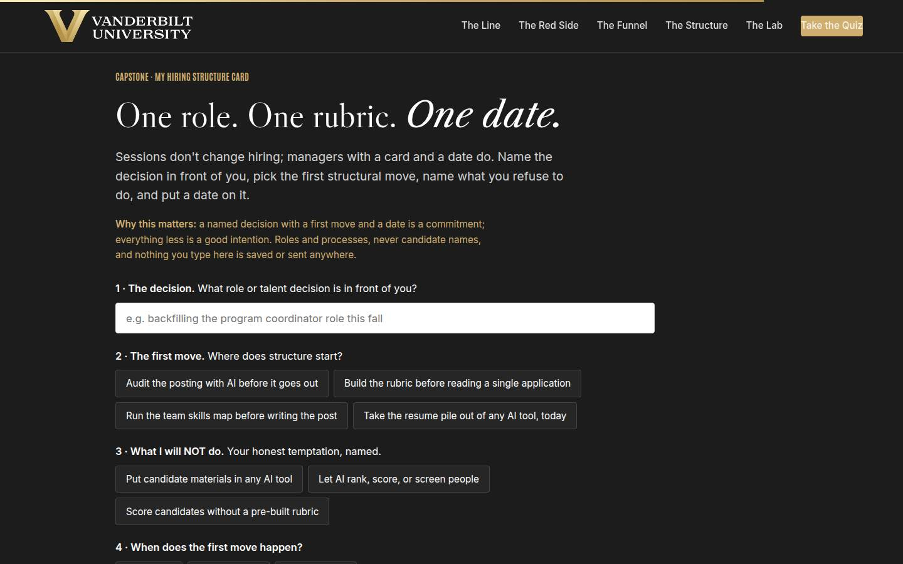
Capstone · My structure card Full 6 min · Core 6
Convert the session into one dated commitment: one talent decision, one structural first move, one named temptation held, and the red-line pledge. The transfer artifact and the Level 3 seed.
Say
“Sessions don't change hiring. Managers with a card and a date do. Name the decision actually in front of you: the backfill, the new role, the growth conversation. Pick the first structural move: audit the posting, build the rubric, run the skills map, or, and this is the honest one for some of us, take the resume pile out of any AI tool today. Then name your temptation, because you know which of the three it is, and naming it is most of holding it. And the date. Read the last line of your card before you close it: candidate materials never enter an AI tool, no tool ranks or screens a person, the process is AI's to help build, and the verdict is yours.”
Do
- Frame it: sessions don't change hiring; managers with a card and a date do.
- Repeat the privacy norm before anyone types: roles and processes, nothing saved or sent.
- Give quiet time; this is individual work. Circulate for stuck learners: the structure plan from section 04 is the raw material, and 'take the pile out of AI today' is the honest first move for anyone who recognized themselves in section 01.
- Point at field 3, what you will NOT do, as the honest one: everyone in the room has one of these three temptations, and naming it is the defense.
- Push the build moment and have them read the final row to themselves: the line, standing, is the pledge they take out of the room.
Ask
“What's most likely to make you skip your first move, and what's your plan for that obstacle?”
Expect:
- No time; the search will start before the structure exists
- The posting is HR's template and feels untouchable
- The team already uses AI shortcuts and pushing back feels awkward
Respond: No time: 'The structure session is 30 minutes against a search that runs for weeks; do it the day the requisition is approved.' The template: 'The requirements inside it are yours; audit those, and bring HR the rewrite rather than the complaint.' The shortcuts: 'Lead with the swap, never the scold: here's the green-side tool that solves the same problem. The lab's violation outcome is your visual aid if you need one.'
Debrief: One decision on your team now has structure coming before candidates, a held line, and a date. That is what fair looks like from the manager's chair.
Validate: Every learner builds a card (all four fields). The card plus the 7-day pulse plus the 30-day re-poll is the evidence chain; the count of first moves actually made is the headline metric.
Watch for: Vague decisions ('improve our hiring'). Push to ONE role or one live decision with a real date. And watch for the learner who picks 'take the pile out of AI today' quietly; find them after and thank them privately; that card is the session working exactly as designed.
Transition: “Reference shelf in one breath, and then the send-off.”
Core path: Core: protect at full length; never cut the capstone.
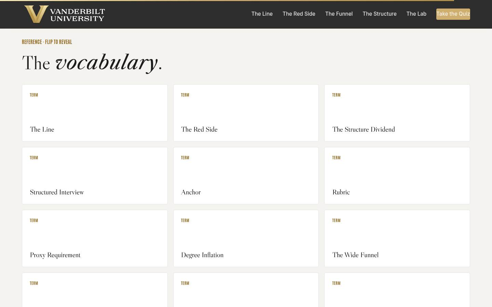
Glossary Full 1 min · Core skip
Signpost the reference layer; it lives here for after the session.
Say
“Every term from today lives here as flip cards, including the culture fit trap, for the next debrief where 'great fit' arrives without evidence.”
Do
- Flip one card on the projector (The Culture Fit Trap is a good pick; it gets a knowing laugh and reteaches section 06).
- Tell them it's all here whenever they need the vocabulary back.
Validate: None; reference material.
Watch for: Don't tour all thirteen cards; one flip makes the point.
Transition: “Last slide. One structure session left to book.”
Core path: Core: skip; point at it verbally from the closing slide.
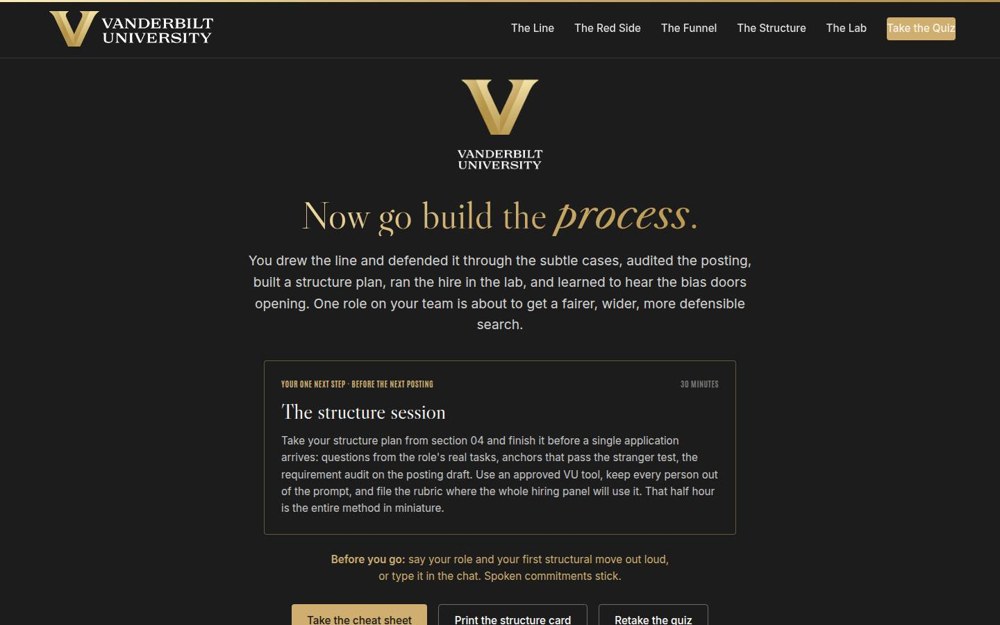
Closing · commitment Full 4 min · Core 1
Convert cards into spoken commitments, capture the Level 1 reaction check, and point at the follow-up chain.
Say
“The whole session in one breath: the temptation is rational and the answer is no, the never list has its subtle cases, the posting can invite instead of filter, structure gets built before candidates and frozen, the lab showed you the one mistake with no undo, and the guardrails keep even the good uses honest. You have a card. Before you go: your role, and your first move. Say it out loud; spoken commitments stick.”
Do
- Read the featured card: the one next step is the 30-minute structure session, before the next posting, in an approved tool, with no person in the prompt.
- Run the fist-to-five (Level 1): 'On a fist to five, how confident are you that you can draw the line and build the structure for your next real search?' Scan and note the number; the 30-day re-poll asks it again.
- Run the commitment round, popcorn style: role and first move, out loud or in chat.
- Point at the cheat sheet and structure card buttons; the cheat sheet is built to sit next to the keyboard during the structure session.
- Tell them the 7-day pulse is coming, then land the last line and stop on time.
Ask
“Around the room, one line each: your role or decision, and your first structural move.”
Expect:
- 'The coordinator backfill; rubric before I read anything'
- 'New analyst role; skills map first, the posting might change'
- Someone commits to taking the pile out of a chatbot today
Respond: Thank each one, no commentary. For the pile-out commitment, one warm sentence: 'That one takes the most honesty in the room, and it's the card the course was built for.'
Debrief: The session's success metric isn't in this room; it's the 7-day pulse: how many first moves actually ran, and whether the red line held its first collision with a busy week.
Validate: Fist-to-five mostly 3+ (Level 1); a majority state a role and a first move out loud or in chat. Count both; with the pulse and the 30-day re-poll, that's your evidence chain.
Watch for: Cards that quietly skipped the date. The commitment round catches them: no date, no commitment; help them pick one on the spot.
Transition: “Go book the structure session. And the next time a pile of applications and a chatbot are both open on your screen, you know exactly which one closes.”
Core path: Core: fist-to-five plus a fast commitment round; the ending survives every cut.
Generated from facilitator/notes.json. The on-screen facilitator edition lives at ./ alongside this guide.